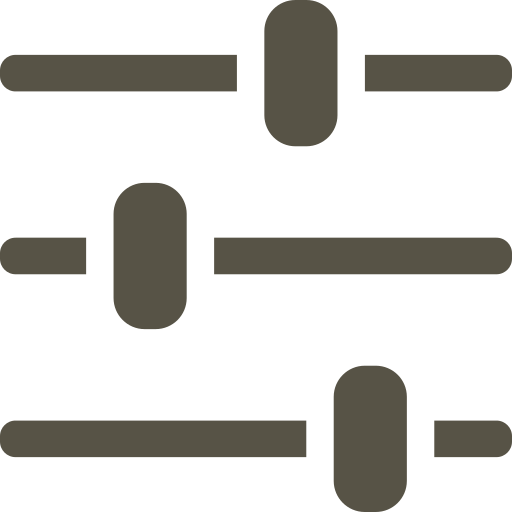

ホーム
タスク・メモ
プロジェクト

タスク・メモ
すべて
進行中
完了済み
＋ 新規メモ
タスクリスト
タスクはまだありません
メモはまだありません
「新規メモ」から作成できます。
複製
削除
設定
ホームの設定
ファイル保存方法
アプリ内にコピー
元ファイルを参照
リンク切れの心配はありませんが、その分データ容量が増えます。
検索履歴
すべて削除
タスクの設定
完了したタスクを自動削除
3日後
1週間後
1か月後
自動削除しない
プロジェクト作成時に同名の空メモを自動作成する
データ移行
データベース
エクスポート
インポート
保存データをZIPでエクスポート出来ます。
AI向けエクスポート
保存先のMarkdownをClaudeのFileSystemMCPやOpenCodeなどから読み込めます。
状態を確認中…
フォルダを開く
設定をすべてデフォルトに戻す
閉じる
タスクを編集
タイトル
期限
優先度
キャンセル
保存
メモ名を変更
タイトル
キャンセル
保存